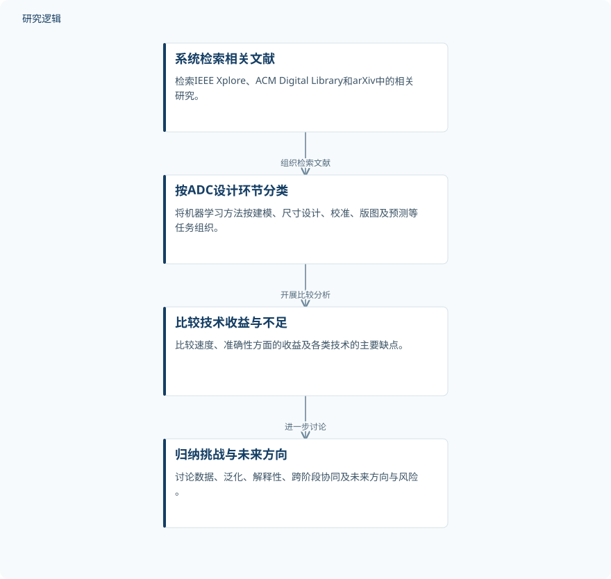

摘要解读
面向模数转换器设计自动化的机器学习技术综述
A Review of Machine Learning Techniques for Analog-To-Digital Converter Design Automation
解读更新 2026-11-10 11:27 · 依据公开摘要整理，未核验全文细节
模数转换器（ADC）设计如何同时应对更高分辨率、更快速度与更高能效的要求？这篇综述按设计环节梳理机器学习的用途，阅读价值在于理解算法介入的位置、比较维度与尚待解决的约束，而非寻找一种通吃整个流程的模型。
文章目录
ADC设计难在多环节迭代与工艺约束
ADC承担模拟信息向数字信息转换的任务。传统设计需要经历规格制定、行为建模、晶体管尺寸设计、电路原理图仿真、版图及版图后验证等环节；同时还要考虑工艺、电压、温度（PVT）变化与良率。这些要求使设计过程耗费人力，也高度依赖设计者经验。
以设计环节为主线，而不是按算法分章
作者说明，综述在IEEE Xplore、ACM Digital Library与arXiv中系统检索2015至2026年的相关研究。其组织方式不是逐类介绍算法，而是将机器学习方法放回ADC设计流程，讨论它们服务于哪些具体任务。
摘要列举的方法包括回归、树模型、支持向量机、人工神经网络、卷积神经网络、图神经网络、强化学习、进化算法和贝叶斯优化。对应任务覆盖行为建模、晶体管尺寸设计、比较器与电容阵列校准、ADC校准、版图优化、PVT／良率变化预测及设计空间探索。
依据摘要整理的综述组织过程


示意图概括摘要明确描述的检索、分类与分析关系，不是论文原图，也不表示ADC自动设计系统。
下载 SVG图示关系说明
实线表示相邻阶段的信息流，虚线表示跨阶段联系或反馈。
系统检索相关文献 → 按ADC设计环节分类：组织检索文献；按ADC设计环节分类 → 比较技术收益与不足：开展比较分析；比较技术收益与不足 → 归纳挑战与未来方向：进一步讨论
收益比较之外，数据与跨阶段协同仍是难点
摘要报告，综述比较了各类技术在速度、准确性方面的收益及主要不足，但未给出具体提升幅度或统一排名。因此，当前资料支持理解其比较框架，不能据此认定某类算法在所有ADC设计任务中更优。
作者归纳的开放挑战包括数据不足、泛化性能欠佳、可解释性较低，以及跨多个设计阶段的协同优化仍少有探索。生成式AI、基于图神经网络的版图优化、物理信息学习、数字孪生和人机协同设计被列为未来方向；其中，生成式方法的可制造性与知识产权也是需要关注的风险，而不是已经解决的问题。
摘要尚不足以判断比较与验证的覆盖面
本解读仅依据所提供的完整摘要。摘要未交代纳入文献数量、筛选标准、各研究的数据规模、ADC类型与工艺覆盖，也未展开比较基线、评价指标或验证条件。因此，尚不能判断各项收益是否具有可比性，以及相关方法能否跨设计条件推广；这不等于论文未讨论这些内容。
阅读启发：先看任务与约束，再看模型名称
阅读启发：进一步阅读时，可优先追问模型解决的是哪个设计环节、依赖什么数据，以及速度或准确性收益在何种条件下成立。对于生成式设计，尤其应关注可制造性与知识产权如何被纳入讨论；对于数字孪生，则应先厘清其在ADC设计中的具体角色，不能仅凭这一术语推断已有智能运维效果。
以上为本站阅读启发与建议，不是论文已验证的结论。